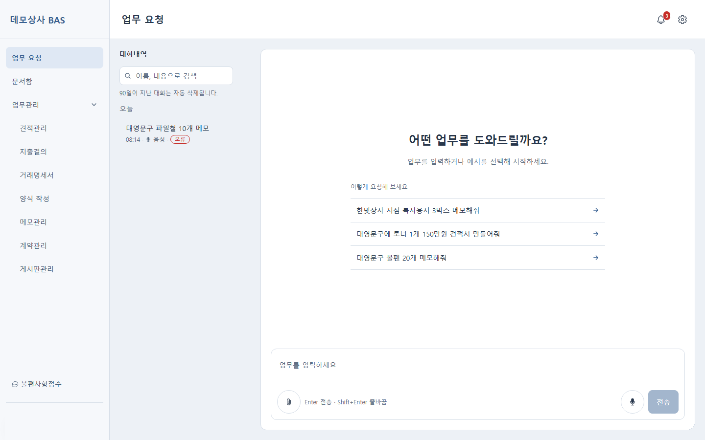
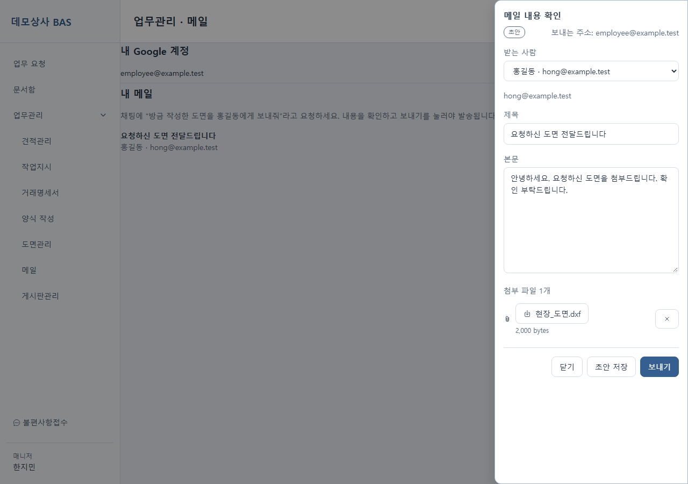
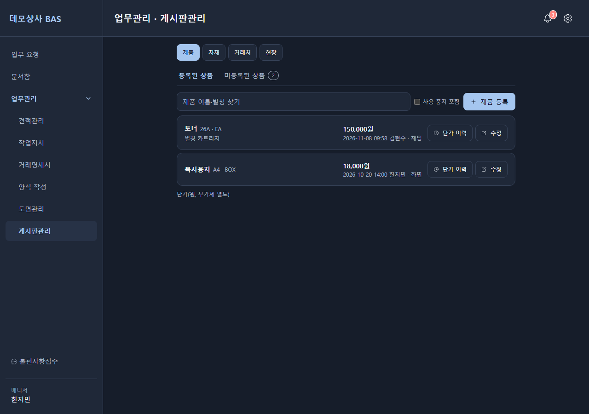
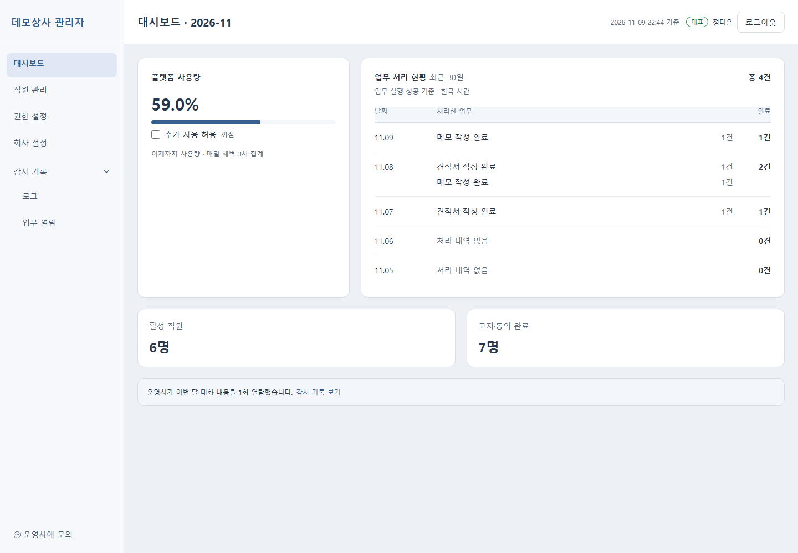
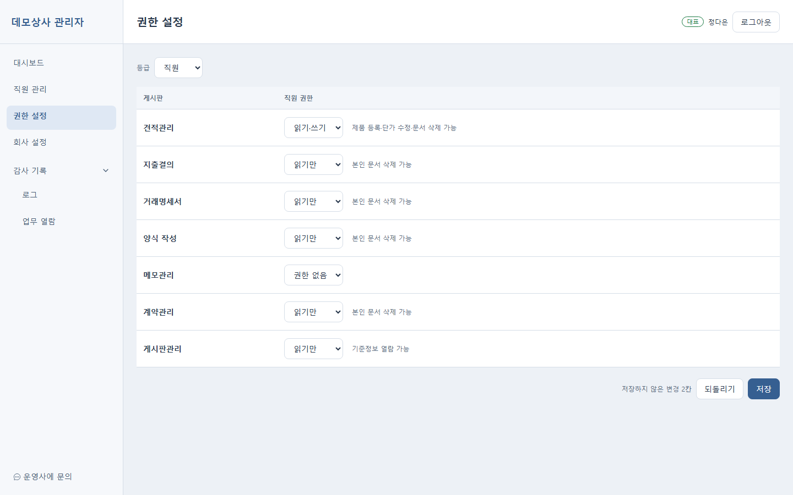
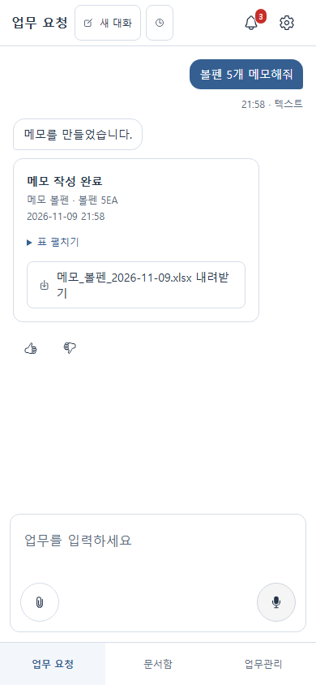

무엇을 자동화하나
AI가 임의의 코드를 만들어 실행하지 않습니다. 회사별로 미리 작성한 업무 스크립트와 확장 도구만 고르고, 입력값은 서버가 실행 전에 스키마로 다시 검증합니다.
견적서 · 발주 요청서
"한빛건설에 철근 2톤 견적서 만들어 줘"처럼 말하면 거래처 · 품목 · 단가 기준정보를 찾아 회사 양식으로 문서를 만듭니다.
도면 수정 · 새 도면 그리기
DXF 도면을 올려 치수 · 문자를 고치거나, 말한 치수로 새 도면을 그립니다.
지출결의서 · 거래명세서
영수증 · 명세서 사진을 AI가 읽어 지출결의서와 거래명세서를 작성합니다.
타 업체 양식 작성
거래처가 보낸 XLSX · DOCX · HWPX · 입력 칸이 있는 PDF 양식의 빈칸을 채웁니다.
메일 초안 작성
직원의 Google 계정으로 메일 초안만 만들고, 직원이 내용을 확인한 뒤 보내기를 눌러야 발송합니다.
대화 · 문서함 검색
"저번에 만든 견적서 얼마였지?"처럼 물으면 본인의 지난 대화와 문서함을 찾아 날짜 · 출처와 함께 답합니다.
요청 처리 흐름
AI는 Claude API의 Tool Runner로 업무 스크립트마다 하나씩 만든 도구 중 하나를 고릅니다. 정보가 부족하거나 후보가 여럿이면 추측하지 않고 선택지를 보여 주며 되묻습니다.
음성 답은 서버에서 합성하지 않고 읽을 문장만 보내 브라우저가 읽으므로, 서버 음성 비용과 음성 파일 보관이 없습니다.
실행 화면
직원 웹앱(PC · 모바일)과 기업 관리자 웹은 Next.js 앱 2개로 나누고, 공용 화면 · API 클라이언트 · 테마는 하나의 패키지에서 함께 씁니다.






화면의 회사 · 사람 · 금액은 모두 시연용 가상 데이터입니다.
1기업 1스택 + 오케스트레이션
고객사마다 서버 · DB · 파일 저장소를 따로 두고, 운영사는 오케스트레이션 하나로 모든 기업을 등록 · 모니터링 · 과금합니다. 기업 스택과 오케스트레이션은 하나의 OpenAPI 계약으로 통신합니다.
AWS CDK
기업 1곳 = TenantStack 1개. 기업별 태그로 비용을 나눠 집계합니다.
사용료 한도
기업별 하루 사용료를 매일 새벽 집계하고, 이번 달 한도를 넘으면 요청을 막습니다. 관리자는 사용률 %만 봅니다.
기업별 기능 켜기
음성 요청(STT) · 음성 응답(TTS)은 애드온으로 켜고 끄며, 꺼진 기능은 화면에서 숨기고 API에서 막습니다.
회사별 업무를 코드로 확장
제품은 모든 회사에 같은 틀과 SDK만 두고, 업무관리 게시판 · 업무 스크립트 · 회사 전용 화면은 회사 폴더에 둡니다. 고객사별 브랜치 없이 하나의 제품으로 여러 회사를 운영합니다.
제품 저장소
- 직원 웹앱 · 관리자 웹 · Nest 백엔드
- 업무 스크립트 Python SDK
- 회사 확장 SDK (화면 · API · 표 · AI 도구 끼움 자리)
- 공통 AI 규칙
회사별 폴더
- 업무 게시판 선언 · 권한 · 문서 분류
- 회사 규칙 · 용어 · 업무 가이드
- 문서 양식 · 업무 스크립트 · 평가
- 회사 전용 화면 · API · 표
운영 저장소
- Spring Boot 백엔드 · Next.js 화면
- OpenAPI에서 Java 클라이언트 생성
- 배포 · 모니터링 구성
서버를 내리지 않는 배포
DB 설정값은 즉시, 회사 설정 파일은 검증 후 핫 리로드, 코드와 스크립트는 같은 서버 안 blue/green으로 반영합니다.
재학습 없는 개선
모델을 재학습하지 않습니다. 되묻기 · 다시 요청 · 처리 못 한 요청에서 주 1회 용어 · 별칭 · 규칙 제안을 만들고, 운영사가 승인한 것만 평가 게이트를 거쳐 반영합니다.
권한 · 데이터 보호
고객사의 업무 데이터와 직원 대화를 다루므로, 권한과 보관 기간을 설계 단계부터 계약서 조항과 함께 정했습니다.
등급 × 게시판 권한
- 운영사 > 대표 > 관리자 > 매니저 > 직원
- 읽기 권한이 없는 게시판의 업무는 AI에게 시킬 수 없고 결과 파일도 숨김
- 관리자 메뉴 권한은 대표가 메뉴마다 지정
데이터 보관 기간
- 대화 기록 90일, 업무 문서 1년 (기업별 설정)
- 음성 녹음은 변환 직후 삭제
- 요청 첨부 원본은 올린 사람만 내려받기
열람 기록
- 대화 열람 · 직원 관리 · 권한 변경은 감사 기록으로 1년 보관
- 직원 고지 · 동의 없이는 서비스 사용 불가
- 업무 스크립트는 업무 테이블만 쓰는 DB 계정으로 실행
AI와 함께하는 개발 프로세스
기술 검토부터 커밋까지 단계를 나누고, Claude Code와 Codex가 같은 규칙 파일과 스킬을 공유하며 서로의 결과를 교차 검증합니다.
검토 → 디자인 → 계획 → 스키마
기술 검토 · 화면 디자인 · 구현 계획 · DB 스키마를 문서로 먼저 쓰고, 확인을 받은 뒤 코드를 작성합니다.
서브컨텍스트 단위 구현
의존성이 없는 작업 단위는 격리된 작업 공간에서 서브에이전트가 병렬로 구현 · 테스트합니다.
테스트 · 교차 검증 후 커밋
기능마다 테스트 케이스를 쓰고, 다른 AI의 교차 리뷰를 통과해야 커밋합니다. 비밀값은 훅으로 커밋 전에 차단합니다.